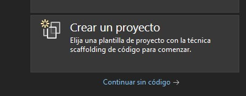
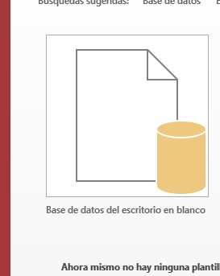

guia de C# con Access
primero tenemos que verificar que todo este instalado para nuestro programa con C# y Access necesitamos:
visual estudio
video para instalacionintalar libreria para Access
video para instalacionahora si podemos empezar creando un nuevo proyecto en nuestro visual estudio con el framework .NET y el lenguaje C#
y al mismo tiempo abrimos una nueva base de datos en access
luego guardamos la base de datos en la carpeta Debug de nuestro proyecto y asi dejamos todo listo para conectar nuestro formulario con la base de datos